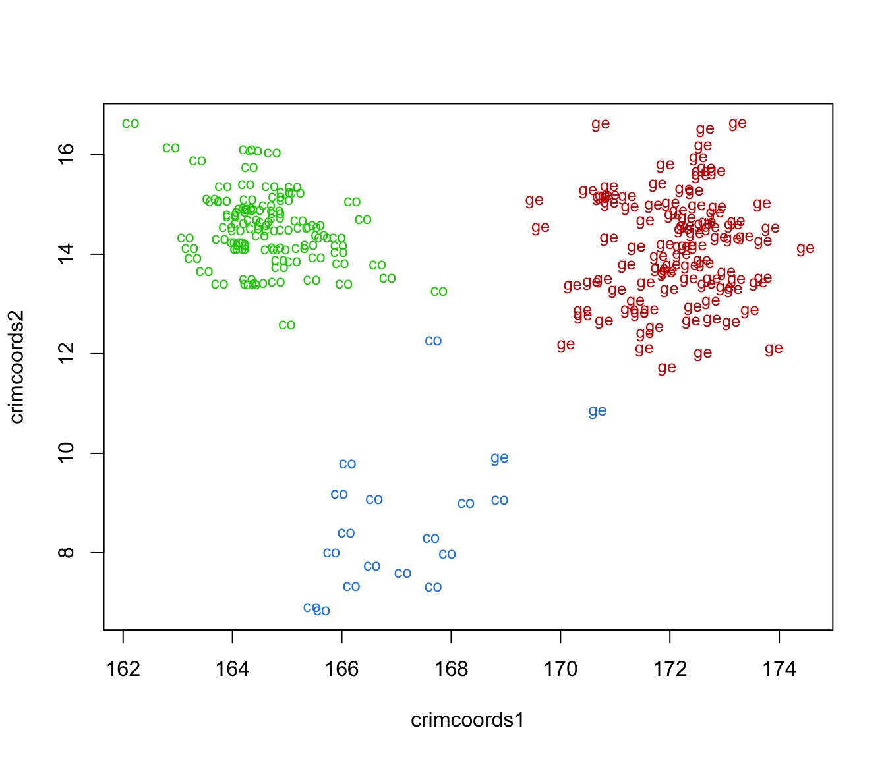
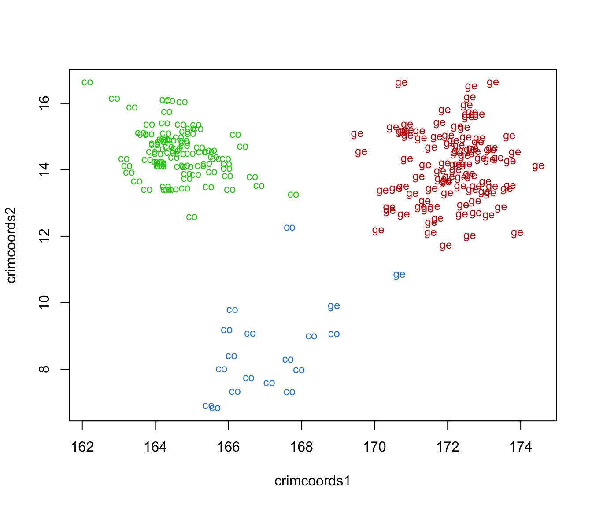

Discriminant coordinates data projection
crimcoords.RdCompute the discriminant coordinates or crimcoords obtained by projecting the observed data from multiple groups onto the discriminant subspace. The optimal projection subspace is given by the linear transformation of the original variables that maximizes the ratio of the between-groups covariance (which represents groups separation) to the pooled within-group covariance (which represents within-group dispersion).
Arguments
- data
A numeric vector, matrix, or data frame of observations. Categorical variables are not allowed. If a matrix or data frame, rows correspond to observations and columns correspond to variables.
- classification
A vector (numerical, character string, or factor) giving the groups classification (either the known class labels or the estimated clusters) for the observed data.
- numdir
An integer value specifying the number of directions of the discriminant subspace to return. If not provided, the maximal number of directions are returned (which is given by the number of non-null eigenvalues, the minimum among the number of variables and the number of groups minus one). However, since the effectiveness of the discriminant coordinates in highlighting the separation of groups is decreasing, it might be useful to provide a smaller value, say 2 or 3.
- unbiased
A logical specifying if unbiased estimates should be used for the between-groups and within-groups covariances. By default
unbiased = FALSEso MLE estimates are used. Note that the use of unbiased or MLE estimates only changes the eigenvalues and eigenvectors of the generalized eigendecomposition by a constant of proportionality, so the discriminant coordinates or crimcoords are essentially the same.- object, x
An object of class
crimcoordsas returned bycrimcoords()function.- ...
further arguments passed to or from other methods.
Value
A list of class crimcoords with the following components:
- means
A matrix of within-groups means.
- B
The between-groups covariance matrix.
- W
The pooled within-groups covariance matrix.
- evalues
A vector of eigenvalues.
- basis
A matrix of eigenvectors specifying the basis of the discriminant subspace.
- projection
A matrix of projected data points onto the discriminant subspace.
- classification
A vector giving the groups classification.
References
Gnanadesikan, R. (1977) Methods for Statistical Data Analysis of Multivariate Observations. John Wiley 1& Sons, Sec. 4.2.
Flury, B. (1997) A First Course in Multivariate Statistics. Springer, Sec. 7.3.
Author
Luca Scrucca luca.scrucca@unipg.it
Examples
# discriminant coordinates for the iris data using known classes
data("iris")
CRIMCOORDS = crimcoords(iris[,-5], iris$Species)
summary(CRIMCOORDS)
#> -------------------------------------
#> Discriminant coordinates (crimcoords)
#> -------------------------------------
#>
#> Estimated basis vectors:
#> crimcoords1 crimcoords2
#> Sepal.Length -0.8378 0.024347
#> Sepal.Width -1.5501 2.186497
#> Petal.Length 2.2236 -0.941383
#> Petal.Width 2.8390 2.868013
#>
#> crimcoords1 crimcoords2
#> Eigenvalues 1609.596 14.27
#> Cum. % 99.121 100.00
plot(CRIMCOORDS)
# banknote data
data("banknote")
# discriminant coordinate on known classes
CRIMCOORDS = crimcoords(banknote[,-1], banknote$Status)
summary(CRIMCOORDS)
#> -------------------------------------
#> Discriminant coordinates (crimcoords)
#> -------------------------------------
#>
#> Estimated basis vectors:
#> crimcoords1
#> Length 0.0050364
#> Left 0.8366262
#> Right -0.8532702
#> Bottom -1.1229645
#> Top -1.1848235
#> Diagonal 1.5643624
#>
#> crimcoords1
#> Eigenvalues 1218.4
#> Cum. % 100.0
plot(CRIMCOORDS)
 # discriminant coordinates on estimated clusters
mod = Mclust(banknote[,-1])
CRIMCOORDS = crimcoords(banknote[,-1], mod$classification)
summary(CRIMCOORDS)
#> -------------------------------------
#> Discriminant coordinates (crimcoords)
#> -------------------------------------
#>
#> Estimated basis vectors:
#> crimcoords1 crimcoords2
#> Length 0.41771 -0.4252
#> Left 0.98024 -0.8729
#> Right -1.11061 -1.1215
#> Bottom -1.55068 1.6469
#> Top -1.55732 1.5712
#> Diagonal 0.90221 2.3650
#>
#> crimcoords1 crimcoords2
#> Eigenvalues 849.225 177.33
#> Cum. % 82.725 100.00
plot(CRIMCOORDS)
# discriminant coordinates on estimated clusters
mod = Mclust(banknote[,-1])
CRIMCOORDS = crimcoords(banknote[,-1], mod$classification)
summary(CRIMCOORDS)
#> -------------------------------------
#> Discriminant coordinates (crimcoords)
#> -------------------------------------
#>
#> Estimated basis vectors:
#> crimcoords1 crimcoords2
#> Length 0.41771 -0.4252
#> Left 0.98024 -0.8729
#> Right -1.11061 -1.1215
#> Bottom -1.55068 1.6469
#> Top -1.55732 1.5712
#> Diagonal 0.90221 2.3650
#>
#> crimcoords1 crimcoords2
#> Eigenvalues 849.225 177.33
#> Cum. % 82.725 100.00
plot(CRIMCOORDS)
 plot(CRIMCOORDS$projection, type = "n")
text(CRIMCOORDS$projection, cex = 0.8,
labels = strtrim(banknote$Status, 2),
col = mclust.options("classPlotColors")[1:mod$G][mod$classification])

plot(CRIMCOORDS$projection, type = "n")
text(CRIMCOORDS$projection, cex = 0.8,
labels = strtrim(banknote$Status, 2),
col = mclust.options("classPlotColors")[1:mod$G][mod$classification])
